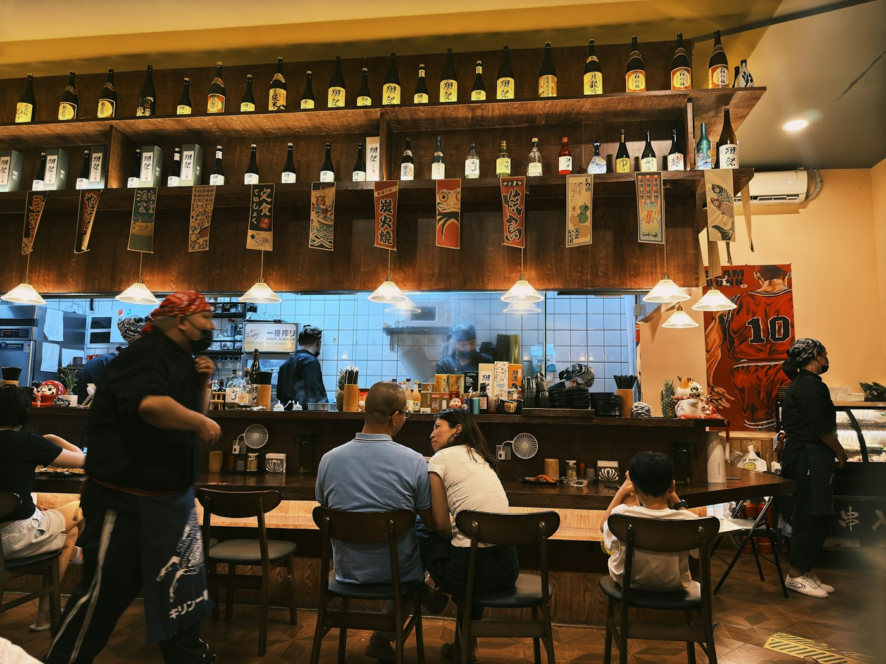

今日のおすすめ
季節ならではの料理や、一日限りの品を。
酒・肴 四谷三丁目
四谷三丁目駅から歩いて3分の地下一階。その日のおすすめと、季節の一品をご用意しています。
短冊にマウスを近づけると揺れます。押すと、裏にひとことが書いてあります。
現在のホームページに掲載のメニュー・価格です。季節や仕入れで変わります。
季節ならではのお料理や限定品など、その日のおすすめをご案内しています。秋田から届く天然の山菜や、冬の牡蠣のかぶら蒸しなど、季節の楽しみを。
ご予約はお電話で承ります。

季節ならではの料理や、一日限りの品を。

生姜とにんにくの効いた竜田揚げ風の唐揚げなど。
現在のホームページに掲載のメニュー・価格です。季節や仕入れで変わります。
…
| 平日 | 17:30〜24:00 |
|---|---|
| 土曜・祝日 | 15:00〜23:00 |
| 定休日 | 日曜 |
宴会や貸切のご相談もお気軽にどうぞ。